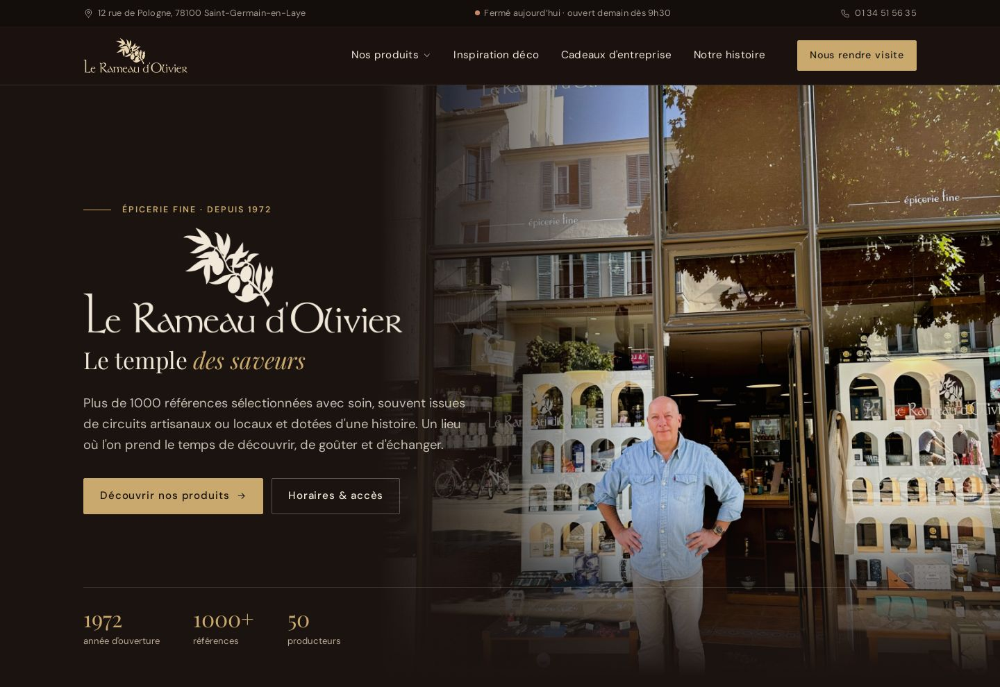
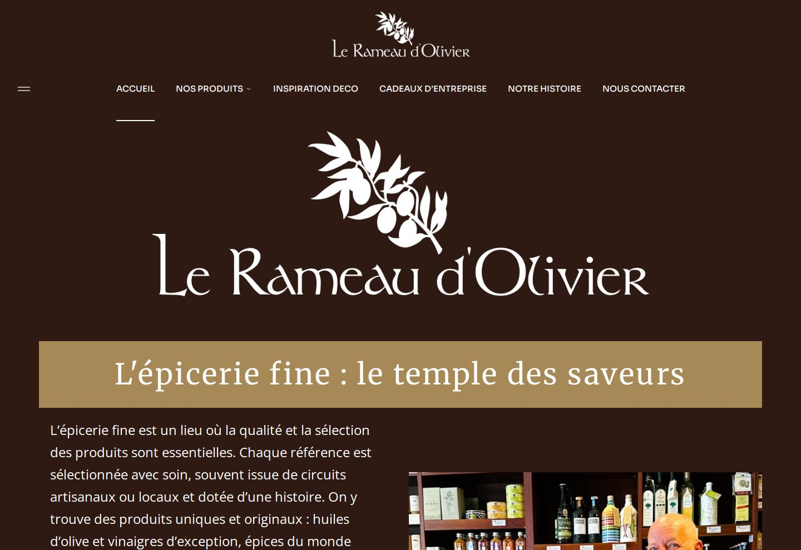

Proposition retenue Nuit gourmande La proposition retenue : une ambiance sombre et chaleureuse, couleur espresso et or, qui met en valeur les produits comme dans un écrin. Playfair Display (titres) · DM Sans (texte) Ouvrir la maquette →
Pour comparer Site actuel Le site tel qu'il est aujourd'hui, reproduit à l'identique ou presque (mêmes pages, textes, couleurs et polices) pour comparer avec la nouvelle version, page par page. Forum (titres) · Merriweather · Open Sans (texte) · Sora (menu) Ouvrir la maquette →Ce qui change par rapport au site actuel
- Menu simplifié. « Accueil » disparaît (le logo y mène). « Nos produits » ouvre un grand menu illustré, regroupé en trois familles. « Nous contacter » devient un bouton « Nous rendre visite » toujours visible.
- Navigation plus fluide. Transitions douces entre les pages, en-tête fixe, rayons accessibles en un clic depuis chaque page produit, liens « rayon précédent / suivant », fil d'Ariane.
- Infos pratiques partout. Adresse, téléphone et horaires du jour affichés en haut de chaque page.
- Une vraie page « Nos produits » qui présente les neuf rayons.
- Mise en page plus aérée. Fini les gros blocs de couleur carrés : des cartes légères, des photos mises en valeur et plus d'espace.
Astuce : dans chaque maquette, la pastille en bas à gauche permet de passer de la nouvelle version au site actuel sur la même page.